Level 2 Playthrough
Level Overview
Overview
Following the events of Mission 1, intel suggests that a rival PMC known as Nighthawk may be hiding crucial information about a superweapon at a secret lab facility. Players are tasked with infiltrating the lab and uncovering both the weapon's location and the truth behind it. The mission culminates in a boss fight against Q-14, whose defeat reveals critical story information through two cutscenes. The lab is a smaller, more linear level than The Wall — Winding hallways and tighter encounter spaces keep the pacing intense, while still giving players enough room to maneuver freely.
Level Goals
- Support the narrative by designing spaces that feel purposeful and grounded in the world of S.O.R.N.
- Guide the player through a linear but varied set of encounters that escalate naturally toward the boss fight
- Deliver a memorable boss encounter with a mid-fight arena transformation that changes how the player engages with the space
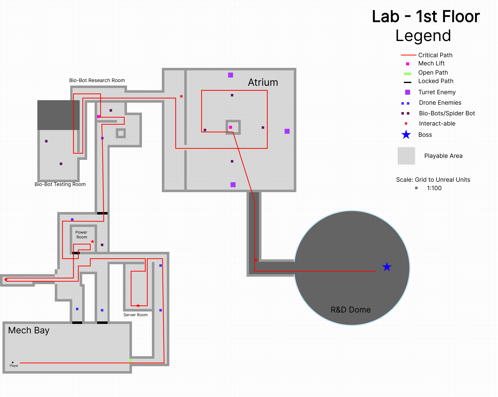
Top-down map of Mission 2 — The Lab
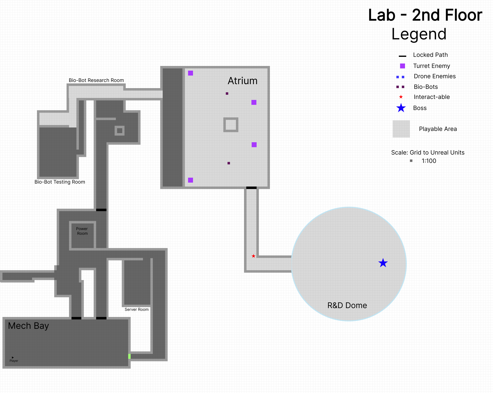
Top-down map of Mission 2 — The Lab, second floor
Beat Breakdown
Beat 01
Power On The Lab
- Goal: Establish the lab's atmosphere through darkness and narrative dialogue, easing the player into combat before a satisfying environmental payoff when the power comes on
- Design Decision 1: The level opens dark and quiet with minimal enemies, allowing the narrative and music to set the tone before combat escalates. A light spline embedded in the floor guides the player along the critical path — First to a terminal that reveals the location of the information we are looking for, then to a generator that powers the lab back on. The spline removes navigation ambiguity without breaking the atmosphere, keeping the player moving naturally through a dark space
- Design Decision 2: Interacting with the generator triggers the lab lights turning on, creating a clear and rewarding moment of environmental change. This power-on sequence doubles as a pacing beat — The darkness slows the player down and lets the dialogue and music breathe, while the lights coming on signals a shift in tone and marks the transition into the more combat-heavy sections ahead
Playthrough — Power Up The Lab
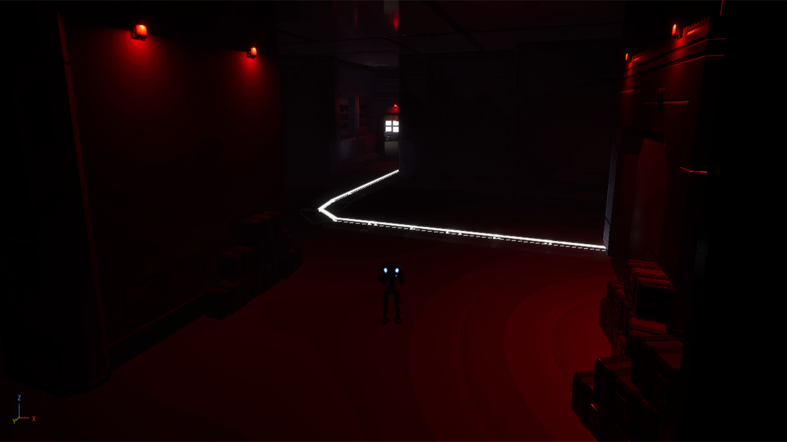
A light spline embedded in the floor guides the player through the dark lab — Directing them to the terminal and generator without breaking the atmosphere
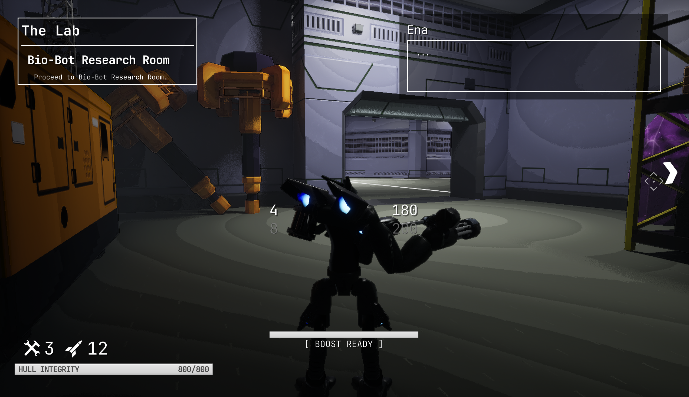
The lab lights on after the generator is activated — A clear environmental shift that rewards the player and signals the start of a more intense phase ahead
Beat 02
Bio Bot Lab
- Goal: Introduce the player to the Bio-bot, the most dangerous enemy in the level, in a controlled encounter that forces active maneuvering and punishes passive play
- Design Decision 1: The player drops down into the encounter space rather than walking in — A deliberate choice to remove the option of retreating. With 2 Bio-bots filling the area with acidic poison mist and a drone applying pressure from range, the player is forced to stay mobile and engage rather than fall back to safety. The sunken layout ensures the poison cloud has maximum coverage and cannot be easily avoided by simply backing away
- Design Decision 2: An elevated platform with a drone on top sits at the edge of the space. To reach the high ground, players must push through the poison and clear the Bio-bots first — rewarding aggression while giving cautious players a clear goal
Playthrough — Bio-Bot Lab
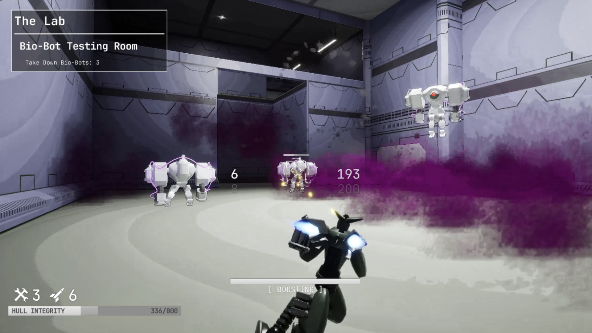
The Bio-bot was designed to be a genuinely threatening enemy — Its acidic poison mist covers a wide area of effect, demanding that the player stay mobile or risk taking sustained damage
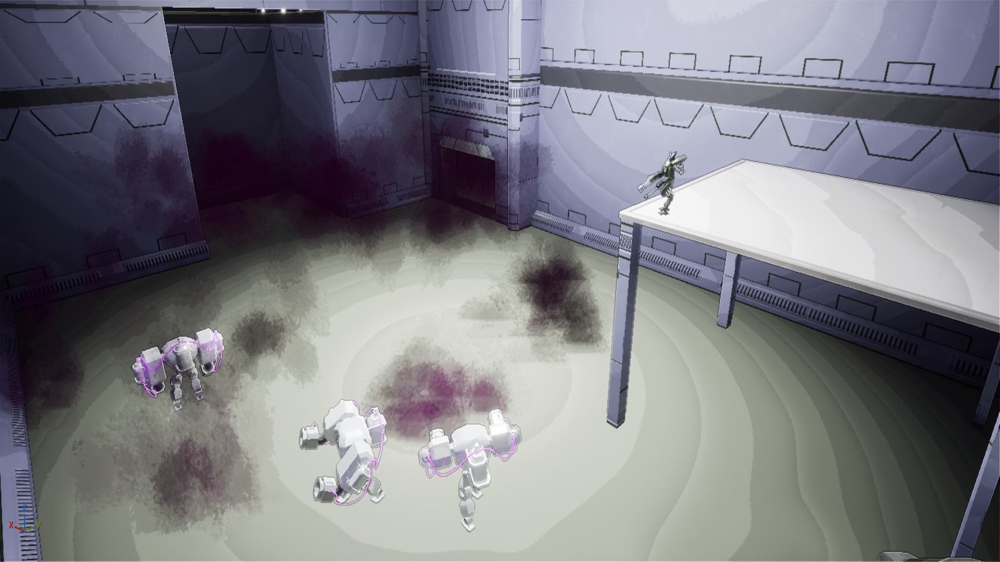
The elevated platform gives players a clear combat advantage, but reaching it requires pushing through the encounter first — Making the high ground something that has to be earned rather than taken for free
Beat 03
The Atrium
- Goal: Deliver the level's most ambitious combat space — A two-story atrium designed to challenge players with verticality, sightlines, and layered enemy pressure before the boss fight
- Design Decision 1: The atrium's large pillars were designed to serve multiple functions simultaneously — They break up the open space into manageable combat zones, provide natural cover positions for the player, and create negative space that gives the encounter visual clarity. The result is a room that feels expansive but never overwhelming, with enough structure to support a wide range of playstyles
- Design Decision 2: Every enemy type in the level appears here — Bio-bots on the ground floor, drones above, and standard enemies throughout. Clearing upward via the lift rewards players who push, while the ground floor favors patience and cover. Every playstyle has a path to success
Playthrough — The Atrium
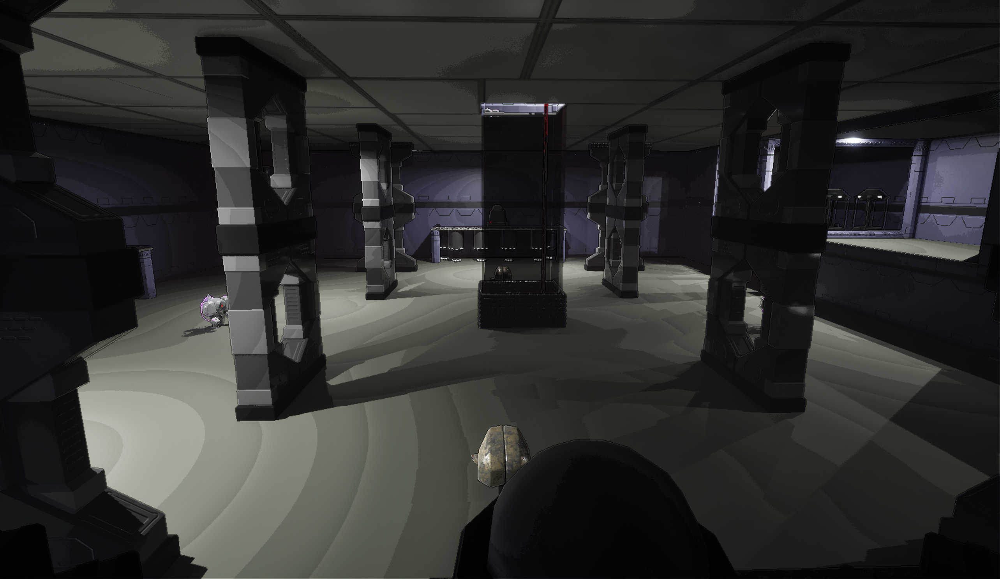
The atrium is the largest and most open space in the level — Wide enough to maneuver freely, structured enough to support cover play, and vertical enough to reward players who push to the second floor
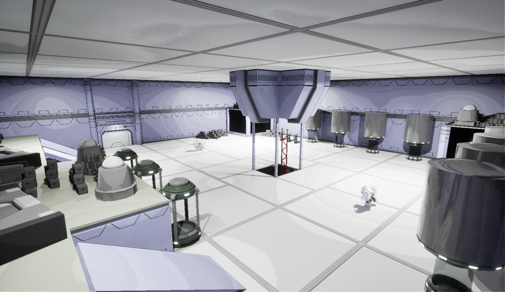
Every enemy type appears here simultaneously — The encounter demands awareness, positioning, and adaptability, but the room is designed so that every playstyle has a path to victory
Beat 04
Boss Fight — Q-14
- Goal: Design a space that serves three distinct purposes — Delivering narrative through cutscenes, hosting a fair and intense one-on-one boss encounter, and physically supporting the mid-fight phase shift where the arena transforms around the player
- Design Decision 1: The R&D Dome is a glass-ceilinged circular arena built to serve both narrative and gameplay. The glass ceiling keeps the hub ship visible during cutscenes, grounding the story without interrupting the space. The circular shape and open sightlines give the player full awareness during the one-on-one fight with Q-14
- Design Decision 2: The phase shift mid-fight sees the central section of the dome floor elevate, dropping the player down to the outer ring and turning the encounter into a circular chase. The scale and shape of the dome were designed with this moment in mind — The outer ring is wide enough to maneuver freely while avoiding laser spawns, and the raised centerpiece becomes a constant visual reference point as the player pursues Q-14 around it. The space had to be large enough to feel intense without being so large that the chase loses its pressure
Playthrough — Boss Fight Against Q-14
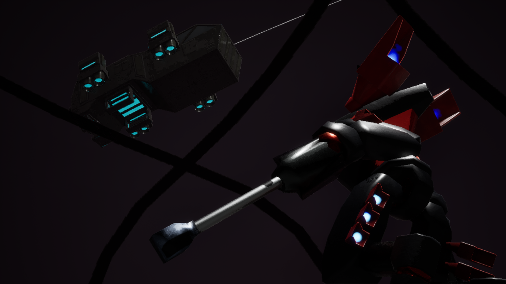
The glass ceiling of the R&D Dome keeps the hub ship visible during cutscenes, grounding the narrative without interrupting the encounter
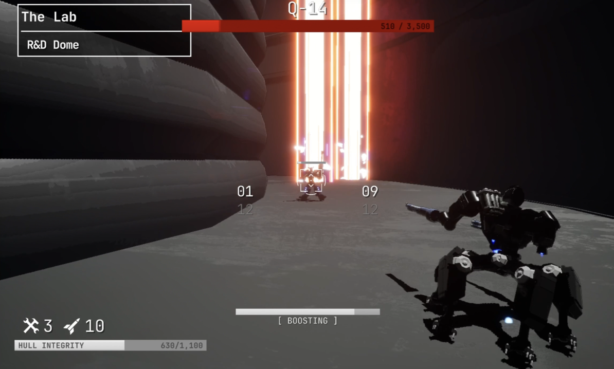
The scale and circular shape of the dome make the phase shift chase feel intense but fair — The outer ring gives the player room to move while the elevated centerpiece anchors the fight and keeps Q-14 within reach
Image Gallery
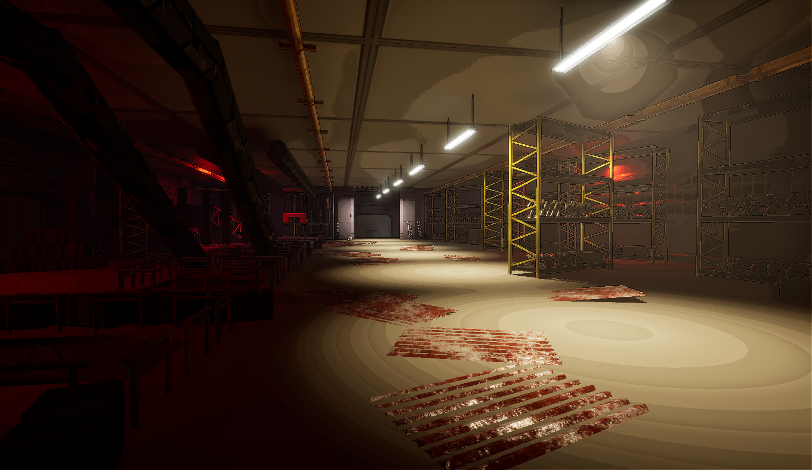
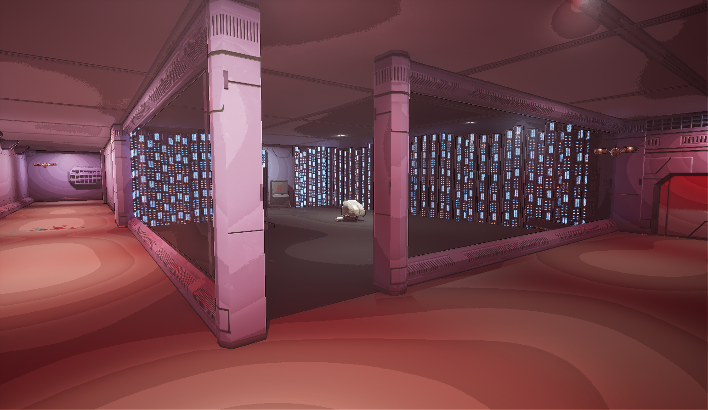
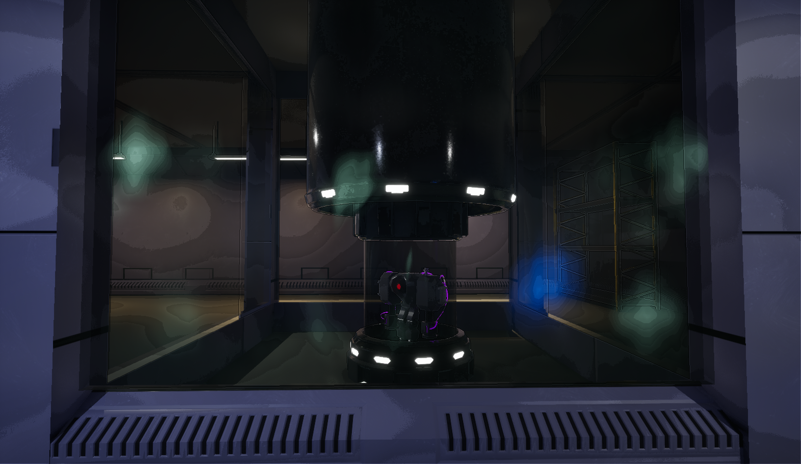
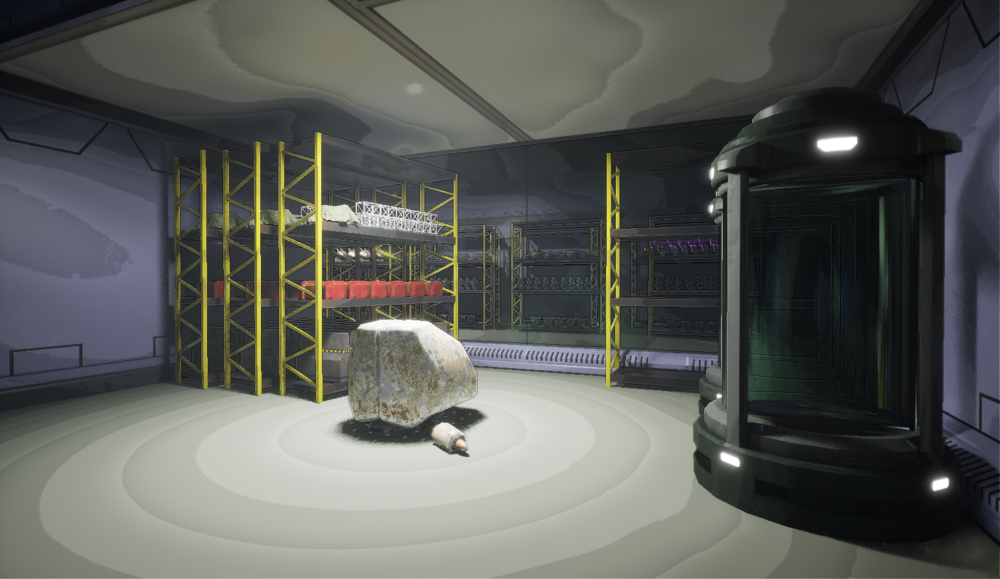
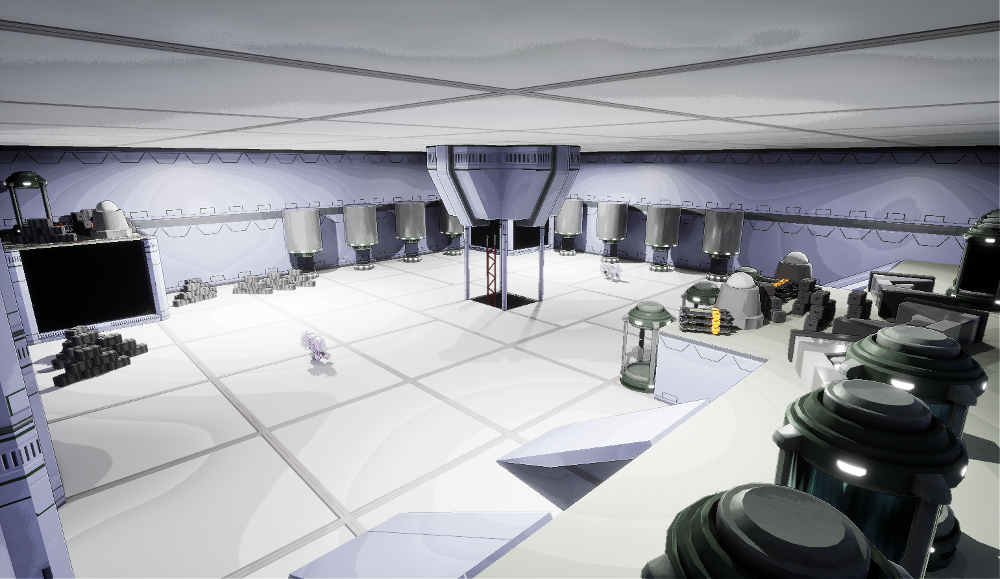
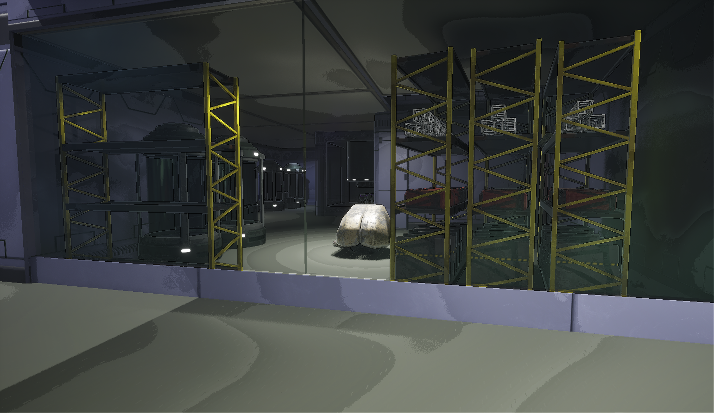
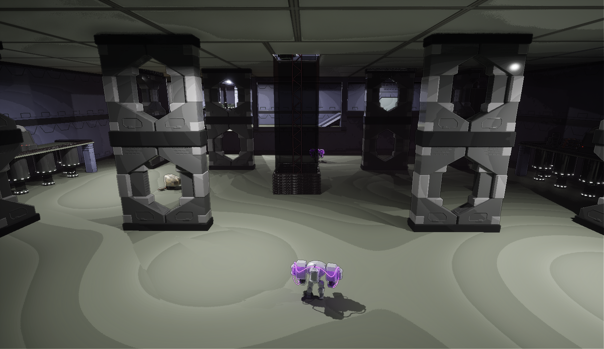
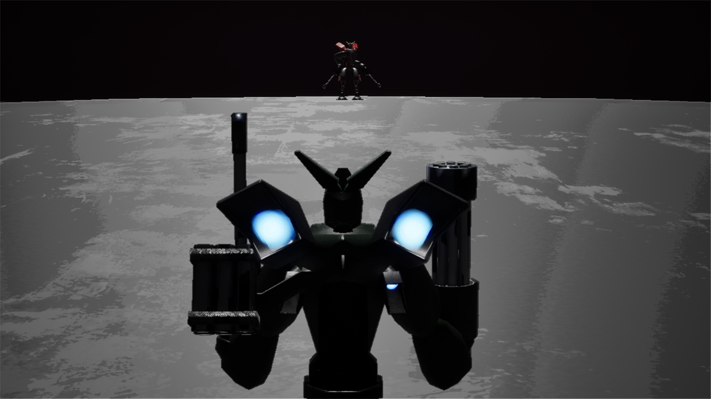
Process & Documentation
A Level Design Document was produced before production began, outlining the narrative context, beat structure, encounter goals, and design intent for each area of the lab.
- Defined the narrative framework and the role each beat plays in advancing the story
- Outlined encounter goals and player experience targets for every area before touching the engine
- Served as the team's shared reference throughout production, keeping design decisions consistent and aligned with the level's core goals
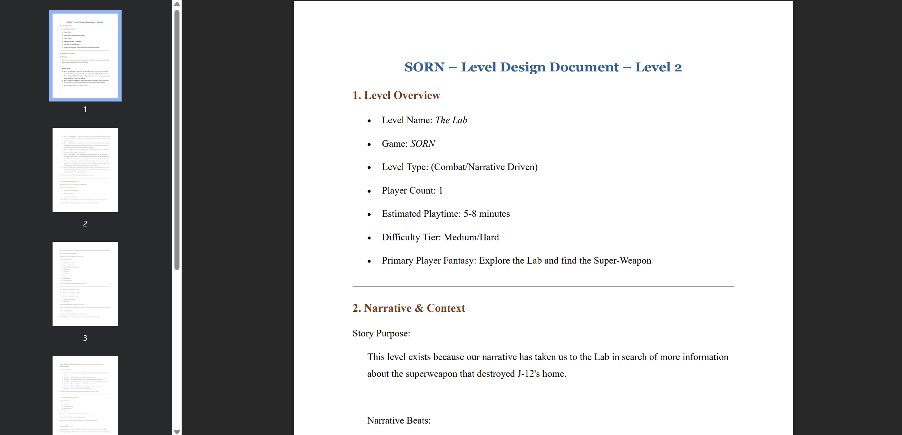
Level Design Document — Bio Lab Mission 2. Click to see the full PDF
The level design process began with top-down maps outlining the layout, encounter zones, and player routing before any work was done in engine.
- Established the linear flow of the lab through early map sketches, identifying where combat and narrative beats would occur
- Mapped the boss arena separately to plan the platform transformation and player movement paths for both phases
- Marked interactable locations directly on the map — Terminals, generators, and key story objects — To ensure narrative beats and dialogue moments were tied to deliberate, designed spaces
Second floor layout — Encounter zones and player routing
First floor layout — Critical path, encounter zones, and interactable locations marked
Visual and gameplay references were gathered before production began to establish the look, feel, and encounter language of the lab environment.
- Studied sci-fi lab environments from games and film to define the visual tone of the space
- Referenced boss fight design from comparable mech and action games to inform the Q-14 encounter structure
- Organized everything on a Miro board alongside layout sketches and design goals before touching the engine
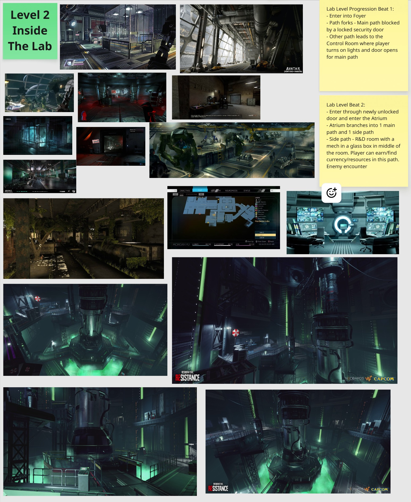
Miro board — References and design goals organized before production
Conclusion & Learnings
Designing the Bio Lab was a different challenge than Mission 1 — Without a traditional blockout-to-final pipeline, the focus shifted entirely to supporting the narrative and crafting encounters that felt purposeful within a linear space. Each beat had a clear job to do, and the goal was to make sure the level design did that job without getting in the way of the story.
Knowledge Gained
- How to properly map out a level — Identifying encounter zones, routing, and interactable locations before building anything in engine
- Deeper application of level design principles such as negative space, using the atrium pillars to create combat clarity and visual breathing room
- More experience with prop placement and set dressing to support both the atmosphere and the gameplay goals of each space
Areas for Growth
- Initial blockouts could have been more developed — Stronger early layouts would have made iteration faster and more focused
- More familiarity with scripting and scripted events would have allowed for more dynamic narrative moments throughout the level
- Exploring puzzle design rather than relying solely on terminal interactions could have added another layer of engagement to the investigation beats